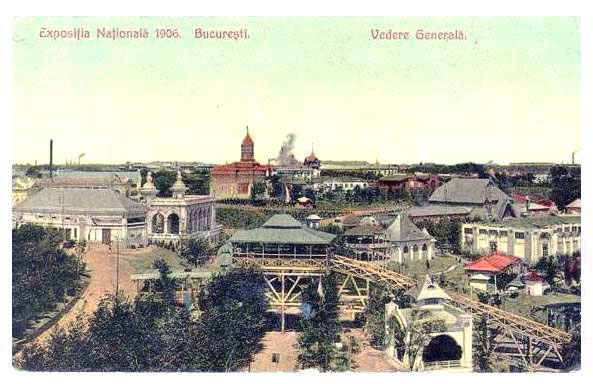
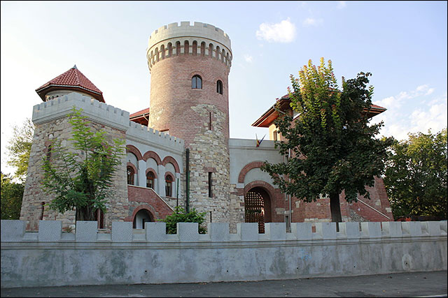
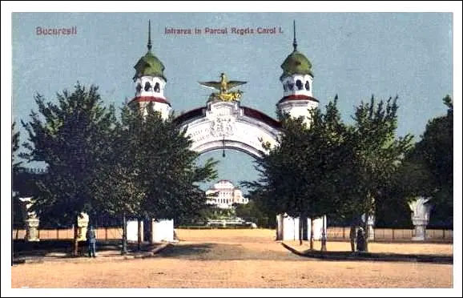
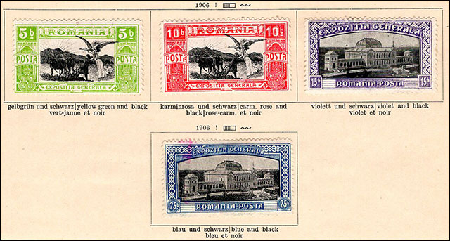
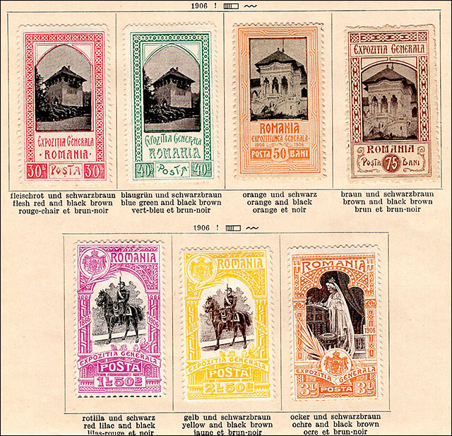
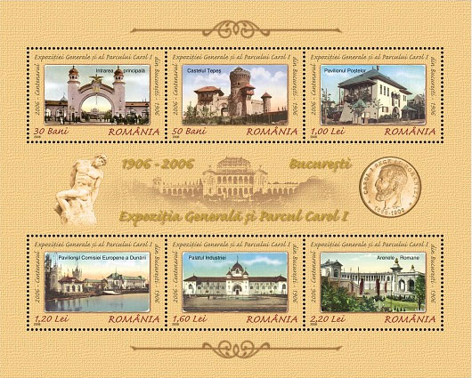
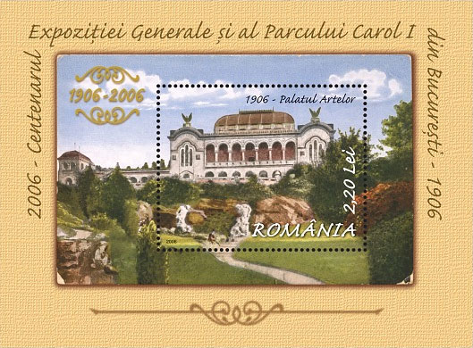
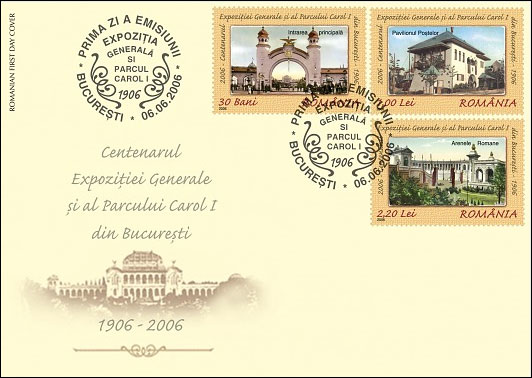
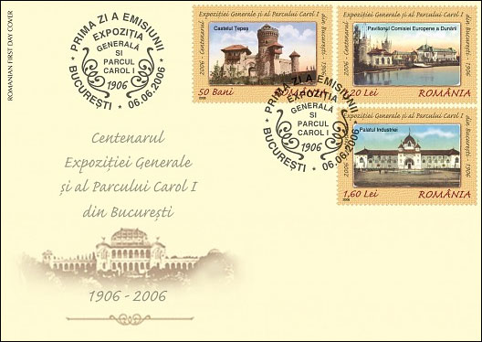
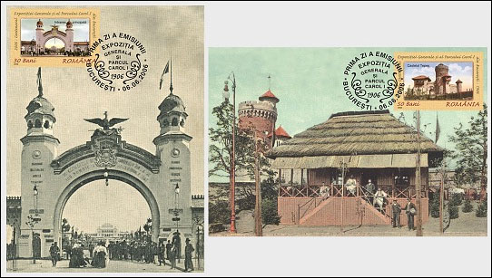

General Exposition of 1906 in Bucharest
On a summer in the early 1960s, I was advised to visit the Freedom Park (which older people called the Carol Park), a park that, although central, was not in the ordinary areas where I used to be. As a result, I took a book, got on my bike, taking advantage of the fact that the traffic of cars was reduced during those difficult times in Bucharest, and very quickly I was in the park.
There were many banks, most of them free, so I sat on one of them, in the shade of one of the beautiful trees of the park. It was around noon and the first thing that struck me when I looked more closely was the absence of people, this in a very lively city, especially in its central area. What I still remember today, after 60 years, was the unusual hum of insects on the large grassy surfaces, a large lake on which several boats slipped, and that was all. Everything appeared quite flat, a truly idyllic area in the center of an otherwise noisy and heavily city polluted by public transportation.

Returning home, I revisited some information found in the Catalog of Romanian Postal Stamps, published in 1958 on the occasion of the 100th anniversary of the release, in 1858, of the four Coat of Arms of Moldova, the first (and precious) postage stamps used in today's territory of Romania.
My gaze quickly fell on the stamps dedicated to the General Exposition of 1906, about which I learned that they had been put up for sale that year on the places I had visited before. However, much I forced my memory, what appeared on the stamps of this series did not correspond at all to what I had seen in the park.
As the stamps were already expensive then, and I found out that there were also dangerous forgeries, my interest in them decreased. I came back to them only a few years ago, after buying on eBay, at an affordable price for me, a complete unused series, fastened with hinges on an album sheet. You will find on this page the images of these stamps, which are undoubtedly the oldest in my collection of Romanian stamps.

To enter the atmosphere, a few words about the park, taken from Wikipedia, but also from other sources.
Carol I Park is a public park in Bucharest, Romania, named after King Carol I of Romania. A French garden located in the south-central area of Bucharest, partly on Filaret Hill, initially capable of hosting various exhibitions, underwent considerable changes during the communist regime, including a change of its name in the Freedom Park.

The park was designed by the French landscape designer Édouard Redont in 1900 on Filaret Hill, under the supervision of Constantin Istrati, then president of the Romanian Academy. It was inaugurated in 1906, 40 years after the coronation of King Carol I and 25 years since the Romanian Principalities became the Kingdom of Romania. The park had an initial area of 36 hectares, including Lake Filaret, of 20,000 m². It has hosted the Bucharest Expsition of 1906 and has included many pavilions and buildings, among which have survived the Carol Park, the Roman Arenas, the "Silver Court" Church, the Tower of Tepes with the Water Castle, fountains and small pavilions. The Tomb of the Unknown Soldier, inaugurated in 1923 in memory of the Romanian soldiers who fell in World War I, was dismantled and moved in 1958 to Mărășești, being replaced by a mausoleum of the Communist heroes (whose destination was changed only after 1990).

A number of 165 exhibition pavilions were built, with considerable effort, including those for the different countries that were represented. An estimated 40,000 exhibitors and approximately 2,000,000 visitors in the nearly six months of operation of the Exposition.
The few vintage cards reproduced on this page give a good idea of how the Carol I Park looked like during the Exposition, images that contrast sharply with what remained of it during the sad communist period when I visited the park.
Let's go back to our favorite subject, namely the postage stamps dedicated to the Exposition. As a first thing I must notice again their age of these stamps. If until now I have written about stamps that either appeared during my lifetime or were close to it and influenced it directly, now I write about a set that was issued about 10 years before my parents were born.

When I was visiting the Freedom Park, formerly the Carol I Park, this happened at the middle of the distance in time between the appearance of the stamps I relate about to the present moment. With all this considerable distance accumulated over time, the events that resulted in the issuance of these stamps represented a manifestation with European resonances, being a sign of the economic and social development of the new Romanian state, which had begun to gain power and enjoy greater consideration when compared to the period preceding it.
On October 29, 1906, the General Directorate of P.T.T. managed to put into circulation the show dedicated to the National Exhibition, which it withdrew from the postal circuit after only 3 days. The stamps, however, continued to be sold at the Post Office specially arranged inside the Exhibition for another two weeks. The postmasters thought that all interested collectors will be able to get their stamps in this period.
For five and a half months, the visitors were able to obtain from the Post Office of the Exhibition stamps of three jubilee series, to make with the help of the officials' philatelic souvenirs and to send internal or external postal correspondence. Illustrated postcards were printed with this occasion by different publishers. The postcards were affixed with stamps purchased from the Exposition, generally using the first two sets, launched in June.
The stamp images of the General Exhibition in Romania cover the following subjects:
05 B. Yellow green / black - Plowman and angel.
10 B. Carmine / black - Plowman and angel.
15 B. Violet / black - Exhibition Pavilion.
25 B. Blue / black - Exhibition Pavilion.
30 B. Red / black brown - Country house.
40 B. Blue green / black-brown - Country house.
50 B. Orange / black - Royal Family Pavilion.
75 B. Brown / black brown - Royal Family Pavilion.
01.50 L. Red lilac / black - King Carol I riding.
02.50 L. Yellow / brown - King Carol I riding.
03 L. Orange brown / black brown – Queen Elizabeth.

Unusually large for that time (approx. 45 mm x 30 mm), the center of the marks is printed in black and the framing appears in the different colors specified above (source – Michel/Scott). The set is cataloged as having the numbers 197 - 207, 11 values (Scott 196 – 206). Print run: 15,000 series, of which 1,200 overprinted SE (Exposition Service).
The stamps are perforated 11-1/2, and the values of 15 - 30 b and 75 b appear also perforated 13-1/ 2.
The value of the unused series, usually hinged, is 270 Euro, and the used one is 130 Euro (Scott USD 206.25 and 109.50).

For the last three values in the set forgeries are known, with white gum instead of yellow, being wider than the originals, with drawing often tarnished and unclear.
Note. It seems that my stamps are original because they have the size and perforation described above. They appear with hinges and without gum, the removal of gum being a common measure of foresight to prevent paper creaks due to the breaks in poor quality gum of that period. Anyway, these stamps were very useful to me to find out more about this old and important issue of the Romanian philately.

Commemorative stamps of the Centenary of the General Exposition and of the Carol Park (2006)
The National Company Romania Post Ltd. has introduced into circulation a philatelic set dedicated to the Centenary of the General Exposition and to the Carol I Park in Bucharest.

Some technical details
Date of issue: 06.06.2006 (please note: 06.06.06)
Designer: Mihai Vămăşescu

Process: offset
Colors: 4
Stamp size: 48 x 33 mm, S/S size: 160 x 129 mm, Perforated souvenir sheet size: 115 x 85 mm (stamp size: 52 x 42 mm)
Values: 0.30 L, 0.50 L, 1 L, 1.20 L, 1.60 L, 2.20 L (note: at that time the facial values were reasonable)
Printed at: Fabrica de timbre, Bucharest

We present on this page various images of this compelling issue.